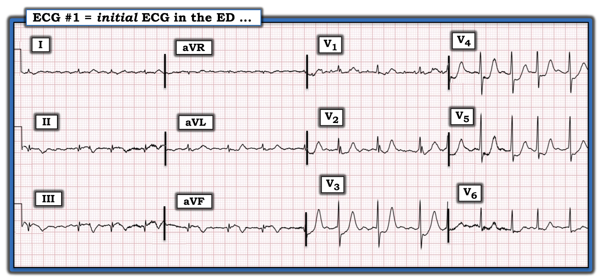
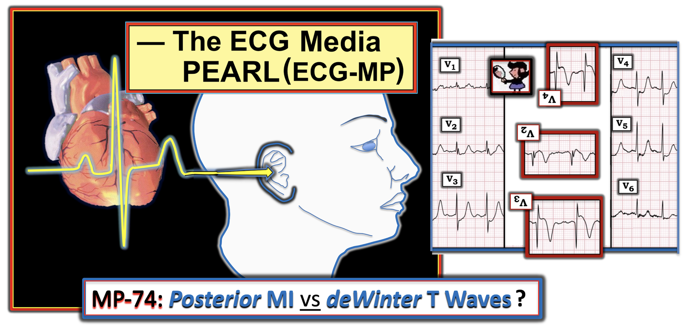
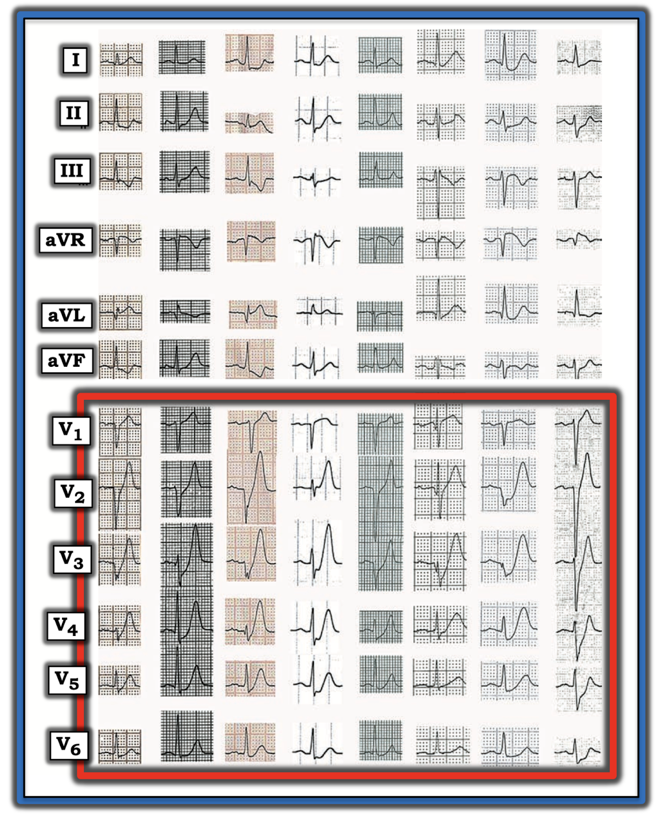
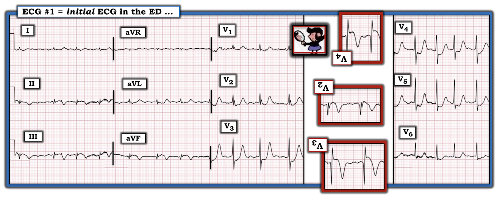

ECG Blog #266 (74) — Sóng T de Winter hay nhồi máu thành sau?
Bệnh nhân có điện tâm đồ ban đầu ở Hình-1 — là một người đàn ông lớn tuổi có các yếu tố nguy cơ tim mạch, đến khoa Cấp cứu (ED: Emergency Department) với bệnh sử khó chịu ở ngực ~1 tháng, trở nên nặng hơn vào ngày nhập viện.
CÂU HỎI:
- Động mạch "thủ phạm" là động mạch nào? Biến cố xảy ra KHI NÀO?
- Điện tâm đồ này gợi ý Nhồi máu thành sau hay sóng T de Winter?


=======================================
LƯU Ý: Đến đây, một số bạn đọc có thể muốn nghe phần ECG Audio PEARL dài 6:45 phút trước khi đọc Suy nghĩ của tôi về điện tâm đồ ở Hình-1. Bạn có thể xem Suy nghĩ của tôi về các bản ghi này bất cứ lúc nào (nằm bên dưới ECG MP-74).
=======================================


ECG Media PEARL #74 (6:45 phút Âm thanh) hôm nay — Ôn lại cách phân biệt Sóng T de Winter với Nhồi máu thành sau.
Cách tiếp cận CỦA TÔI với điện tâm đồ ở Hình-1:
Như mọi khi — tôi ưu tiên một Cách tiếp cận hệ thống để đọc mọi điện tâm đồ tôi gặp (Cách tiếp cận hệ thống này được ôn lại trong ECG Blog 205).
- Tần số & Nhịp: Dù không có dải nhịp (rhythm strip) dài — ta vẫn thấy nhịp không đều hoàn toàn (irregularly irregular) với tần số thất trong khoảng ~70 đến 110/phút. Không có sóng P — do đó nhịp là AFib (rung nhĩ — Atrial Fibrillation) với đáp ứng thất được kiểm soát.
CÂU HỎI:
- Liệu các gai nhỏ, dương thấy ở chuyển đạo V1 (nhưng không thấy ở các chuyển đạo khác) có phải là AFlutter (cuồng nhĩ — Atrial Flutter) chứ không phải AFib không?
TRẢ LỜI:
Dù thoạt nhìn — các gai nhỏ dương lặp đi lặp lại thấy ở chuyển đạo V1 có thể gợi ý AFlutter — nhưng nhiều dấu hiệu điện tâm đồ chống lại giả thuyết này:
- Nhiều chuyển đạo ở Hình-1 có nhiễu đường nền rõ rệt. Khi nhiều chuyển đạo khác có dấu hiệu nhiễu đường nền rõ — thì các sóng lệch bất thường ở một chuyển đạo khác cũng nhiều khả năng hơn hẳn là nhiễu.
- Các gai nhỏ ở chuyển đạo V1 trông có dạng hình học (thẳng). Đường nền ở chuyển đạo này bị trôi — và — đo các gai nhỏ bằng compa (calipers) xác nhận khoảng cách từ gai này đến gai kế tiếp khôngđều nhau.
- Không chuyển đạo nào trong 11 chuyển đạo còn lại cho thấy hoạt động nhĩ xuất hiện đều đặn.
- Nhịp thất không đều hoàn toàn.
- AFib phổ biến hơn AFlutter rất nhiều.
- ĐIỀU CỐT LÕI: AFlutter thường là một nhịp nhĩ rất đều — ở bệnh nhân chưa điều trị, tần số nhĩ thường gần 300/phút (khoảng 250-350/phút). Dù có thể gặp AFlutter với dẫn truyền thất thay đổi — nhưng phần lớn đáp ứng thất sẽ đều hoặc cho thấy nhịp theo nhóm (group beating). Sóng cuồng nhĩ thường thấy rõ ở nhiều hơn một chuyển đạo — và thường rõ nét hơn các sóng lệch thấy ở chuyển đạo V1. Do đó — các gai nhỏ ở Hình-1 là nhiễu. Nhịp nền trong bản ghi này là AFib với đáp ứng thất được kiểm soát.
ĐIỂM THEN CHỐT (PEARL) #1: BẠN có nhận thấy Điện thế thấp ở các chuyển đạo chi không? (tức là phức bộ QRS ở cả 6 chuyển đạo đều không vượt quá 5 mm). Vì ta sắp xem xét khả năng nhồi máu cấp hoặc mới xảy ra — nên cần biết các nguyên nhân có thể gây điện thế thấp.
- Các nguyên nhân có thể liên quan cần xem xét trong ca hôm nay gồm: i) Tràn dịch màng ngoài tim; ii) Bệnh cơ tim Takotsubo; và, iii) Một nhồi máu cấp (hoặc mới xảy ra) diện rộng, có thể gây "choáng" cơ tim (myocardial stunning) (Xem ECG Blog #262 để biết thêm về chủ đề này).
Tiếp tục với Cách tiếp cận hệ thống của tôi:
- Các khoảng (PR/QRS/QTc): Không có khoảng PR — vì nhịp là AFib. Phức bộ QRS hẹp — và QTc không kéo dài
- Trục: Khó đánh giá trục QRS mặt phẳng trán — vì điện thế rất thấp ở cả 6 chuyển đạo chi (các phức bộ gần như đẳng điện ở mọi chuyển đạo chi trừ chuyển đạo I). Việc phức bộ QRS rất nhỏ ở chuyển đạo I có vẻ dương hoàn toàn gợi ý rằng, thay vì trục "không xác định", trục mặt phẳng trán nhiều khả năng nằm trong góc phần tư bình thường từ 0 đến 90 độ.
- Lớn các buồng tim: Có lẽ không có — dù có sóng R nhỏ-nhưng-ưu thế ở chuyển đạo V1 (tôi sẽ bàn ngay sau đây).
Về Thay đổi Q-R-S-T ở điện tâm đồ #1:
- Sóng Q — Xét đến việc các phức bộ QRS nhỏ thế nào ở mỗi chuyển đạo thành dưới — thì các sóng Q có ở chuyển đạo II, III và aVF là lớn (tức là biên độ ít nhất bằng chiều cao sóng R ở mỗi chuyển đạo thành dưới tương ứng). Các sóng Q này có giá trị chẩn đoán nhồi máu thành dưới, đã xảy ra vào một thời điểm nào đó.
- Tăng tiến sóng R — Dù việc đánh giá phức bộ QRS ở chuyển đạo V1 khó hơn do các gai nhiễu trên đường nền và kích thước QRS rất nhỏ — thực tế vẫn là sóng R chiếm ưu thế ở chuyển đạo V1 (tức là hoàn toàn không có sóng S ở chuyển đạo này).
ĐIỂM THEN CHỐT (PEARL) #2: Khi đánh giá — BẠN đã lý giải Sóng R cao ở Chuyển đạo V1 chưa? Như tôi nhấn mạnh trong ECG Blog #248 — bình thường phức bộ QRS sẽ âm là chủ yếu ở chuyển đạo V1. Vì vậy — Bất cứ khi nào bạn gặp sóng R chiếm ưu thế ở chuyển đạo V1 (như ta thấy ở Hình-1 của ca hôm nay) — hãy xem xét 6 Nguyên nhân có thể sau (được bàn chi tiết trong Audio Pearl ở Blog #248):
- Hội chứng WPW (Wolff-Parkinson-White).
- RBBB (blốc nhánh phải — Right Bundle Branch Block).
- RVH (phì đại thất phải — Right Ventricular Hypertrophy).
- Nhồi máu thành sau.
- Bệnh cơ tim phì đại.
- Biến thể bình thường — là chẩn đoán loại trừ.
Việc phức bộ QRS ở Hình-1 hẹp lập tức loại trừ WPW và RBBB. Ngoài sóng R cao ở chuyển đạo V1 — không có dấu hiệu nào khác gợi ý RVH trong bản ghi hôm nay (tức là Không trục lệch phải — không RAA — không "tăng gánh" thất phải — và không có sóng S sâu kéo dài tới chuyển đạo V5 và V6). Không có gì gợi ý bệnh cơ tim phì đại (tức là Không đạt tiêu chuẩn LVH nào) — và bản ghi này rõ ràng không phải là "biến thể bình thường". Do đó — sóng R chiếm ưu thế ở chuyển đạo V1 của Hình-1 nhiều khả năng nhất là biểu hiện của nhồi máu thành sau.
Cuối cùng — Về Thay đổi ST-T:
- Ta đã ghi nhận có sóng Q đáng kể ở cả 3 chuyển đạo thành dưới. Dù nhiễu đường nền nhiều khiến việc đánh giá ST-T ở các chuyển đạo thành dưới này khó hơn — nhưng quả thật có vẻ có đoạn ST dạng vòm (coving) kèm ST chênh lên nhẹ, theo sau là sóng T đảo ngược sâu, đối xứng ở chuyển đạo II, III và aVF.
- Mối quan hệ đối nghịch soi gương "kỳ diệu" của ST-T giữa chuyển đạo III và aVL thấy rõ ở Hình-1 (Khái niệm này được bàn chi tiết trong ECG Blog #184). Dù tinh tế — đoạn ST dạng lõm với đỉnh sóng T tương đối cao ở chuyển đạo aVL là hình soi gương đối nghịch của đoạn ST dạng vòm kèm ST chênh lên nhẹ, theo sau là sóng T đảo ngược mà ta thấy ở chuyển đạo III. Mối quan hệ này xác nhận đã có MI thành dưới mới xảy ra hoặc cấp.
- Ở các chuyển đạo trước ngực — Ta đã ghi nhận sóng R nhỏ-nhưng-ưu thế ở chuyển đạo V1, phù hợp với khả năng MI thành sau.
- Sóng R tiếp tục chiếm ưu thế ở chuyển đạo V2 và V3.
- Có ST chênh xuống đáng kể bắt đầu từ chuyển đạo V2 — tối đa ở chuyển đạo V3 và V4 — rồi kéo dài tới tận chuyển đạo V6. Đi kèm là nhánh lên sóng T dốc nhanh, đạt đỉnh thành sóng T cao 10+ mm ở chuyển đạo V3.
Tổng Hợp Tất cả Lại:
Câu hỏi lâm sàng khiến tôi trình bày ca hôm nay là liệu hình ảnh điện tâm đồ ở Hình-1 gợi ý nhiều hơn đến nhồi máu thành sau hay sóng T de Winter?
- Dấu hiệu điện tâm đồ gọi là sóng T de Winter (deWinter T waves) đặc trưng bởi các sóng T khổng lồ thường thấy ở 2 chuyển đạo trước trở lên, thường khởi đầu bằng điểm J chênh xuống (J-point ST depression) ít nhiều — rồi dốc lên nhanh thành sóng T cao, rộng, vượt cao hơn sóng R tương ứng ở chuyển đạo bạn đang xem. Để minh họa — tôi đã chỉnh sửa Hình-2 từ bài báo gốc của de Winter (2008, NEJM) — để trình bày các điện tâm đồ điển hình từ 8 bệnh nhân khác nhau mắc hội chứng này.
- Tôi trình bày thêm 2 ca sóng T de Winter trong ECG Blog #53 và Blog #183.
- Ý nghĩa lâm sàng của việc nhận ra sóng T de Winter ở bệnh nhân đau ngực — là dấu hiệu điện tâm đồ này cho bạn biết có tắc động mạch vành LAD (động mạch liên thất trước — Left Anterior Descending) gần hoàn toàn (nếu không phải hoàn toàn) — cần thông tim sớm và tái tưới máu cấp.
- LƯU Ý: DỄ hiểu vì sao các sóng T rất cao và dốc lên nhanh ở chuyển đạo V3 và V4 của Hình-1 có thể bị đọc là phù hợp với sóng T de Winter. Tuy nhiên, có một số lý do khiến tôi cho rằng ít khả năng LAD là động mạch "thủ phạm" trong ca hôm nay.


ĐIỂM THEN CHỐT (PEARL) #3: Điểm MẤU CHỐT ủng hộ nhồi máu thành sau thay vì sóng T de Winter nằm ở Bệnh sử — vì bệnh nhân trong ca hôm nay đã bị khó chịu ở ngực nhiều tuần!
- Các dấu hiệu điện tâm đồ ở chuyển đạo chi của Hình-1 rõ ràng phù hợp với nhồi máu thành dưới. Kích thước tương đối lớn của sóng Q thành dưới (xét đến biên độ QRS rất nhỏ ở các chuyển đạo này) — cùng với sóng T đảo ngược sâu đến bất ngờ ở các chuyển đạo thành dưới gợi ý đã có tái tưới máu tự phát. Điều này thường cần một thời gian (tức là ít khả năng nhồi máu thành dưới xảy ra trong vài giờ vừa qua).
- Áp dụng Nghiệm pháp Soi gương (Mirror Test), như trình bày ở Hình-3 cho chuyển đạo V2, V3 và V4, cho thấy hình ảnh đặc trưng của nhồi máu mới xảy ra (nhưng không cấp) với Sóng T tái tưới máu (reperfusion T-waves). Nghĩa là, hình soi gương của các sóng T cao, dốc lên nhanh và nhọn thấy ở các chuyển đạo trước tương ứng với sóng T đảo ngược sâu, đối xứng ở thành sau thất trái (Việc áp dụng Nghiệm pháp Soi gương được minh họa trong ECG Blog #193 và Blog #80).
- Điểm MẤU CHỐT: Chỉ vì đã qua một thời gian kể từ khi khởi phát biến cố cấp trong ca hôm nay — nên mới có sự nhầm lẫn giữa tắc LAD (tức là câu hỏi về sóng T de Winter) sắp xảy ra — với — tắc RCA (động mạch vành phải — Right Coronary Artery) hoặc LCx (động mạch mũ trái — Left Circumflex) mới xảy ra (nhưng không cấp), nay đã có sóng T tái tưới máu ở các chuyển đạo thành dưới và trước. Bệnh cảnh MI dưới-sau cấp ít khả năng bị nhầm với sóng T de Winter hơn nhiều — vì các sóng T cao rất, dốc lên nhanh khó xuất hiện sớm như vậy ở các chuyển đạo trước khi nhồi máu thành sau vừa mới xảy ra (Xem các ca trong ECG Blog #80 và Blog #193).
ĐIỂM THEN CHỐT (PEARL) #4: Hãy xem lại 8 ví dụ về sóng T de Winter ở Hình-2. Lưu ý rằng, có lẽ trừ ví dụ thứ 4 — nhánh lên của sóng T dốc nhanh!
- Một "bậc thềm" (shelf) nhẹ (tức là đoạn nằm ngang) ở phần điểm J chênh xuống ban đầu thấy ở ví dụ thứ 4 — nhưng thời gian của "bậc thềm" này ở các chuyển đạo có sóng T khổng lồ (chuyển đạo V2, V3, V4) là ngắn.
- Hãy so sánh hình dạng của đoạn ST chênh xuống ở chuyển đạo V3, V4 và V5 của Hình-3. Chẳng phải "bậc thềm" ST (đoạn nằm ngang) ở đây kéo dài hơn so với những gì ta thấy ở 8 ví dụ sóng T de Winter trong Hình-2 sao?
- Điểm MẤU CHỐT: Sườn lên của sóng T trong hình ảnh de Winter thường dốc hơn nhiều so với hình ảnh điện tâm đồ của MI thành sau.
ĐIỂM THEN CHỐT (PEARL) #5: Tăng tiến sóng R thường kém khi sắp có MI thành trước do tắc LAD cấp. Hãy chú ý biên độ sóng r nhìn chung giảm ở các chuyển đạo trước trong 8 ví dụ sóng T de Winter ở Hình-2. Thậm chí còn thấy sóng Q thành trước rõ ràng ở ví dụ thứ 6.
- Ngược lại — ở chuyển đạo V1 của Hình-3 thấy sóng R chiếm ưu thế, rồi biên độ sóng R tăng lên ở chuyển đạo V2 và V3. Như đã nói ở trên — sóng R chiếm ưu thế ở chuyển đạo V1 này trong bối cảnh nhồi máu thành dưới mới xảy ra gợi ý mạnh có kèm MI thành sau. Ta sẽ không chờ đợi thấy các sóng R nổi bật ở chuyển đạo trước như thế này khi có sóng T de Winter của nhồi máu thành trước sắp xảy ra.
ĐIỂM THEN CHỐT (PEARL) #6: Mức ST chênh xuống trong MI thành sau thường tối đa ở chuyển đạo V2 — và/hoặc chuyển đạo V3 — và/hoặc chuyển đạo V4. Đây chính xác là các chuyển đạo ở Hình-3 có mức ST chênh xuống "dạng bậc thềm" (shelf-like) lớn nhất.


KẾT LUẬN của ca bệnh:
Bệnh nhân trong ca hôm nay đã được thông tim — và phát hiện tổn thương đoạn giữa RCA (động mạch vành phải — Right Coronary Artery), phù hợp với MI dưới-sau có lẽ đã xảy ra vài ngày đến khoảng một tuần trước đó.
- Kết quả thông tim này hoàn toàn phù hợp với hình ảnh điện tâm đồ ở Hình-3 — trong đó dấu hiệu nổi bật nhất là các sóng T tái tưới máu âm ở các chuyển đạo thành dưới — và rất cao, nhọn ở các chuyển đạo trước ngực.
==============================
Lời cảm ơn: Xin cảm ơn Ingram Lai (Đài Loan) đã chia sẻ ca bệnh và bản ghi này.
==================================
Các bài ECG Blog liên quan đến ca hôm nay:
- ECG Blog #205 — Ôn lại Cách tiếp cận hệ thống của tôi để đọc điện tâm đồ 12 chuyển đạo (tóm tắt trong Hình-2 và -3, và là chủ đề của Audio Pearl MP-23 trong Blog #205).
- ECG Blog #193 — minh họa cách dùng Nghiệm pháp Soi gương để dễ nhận ra MI thành sau cấp. Bài này ôn lại những điều cơ bản để dự đoán động mạch "thủ phạm". LƯU Ý: Audio Pearl ôn lại lý do vì sao thuật ngữ "OMI" ( = nhồi máu cơ tim do tắc — Occlusion-based MI) nên thay thế thuật ngữ quen thuộc hơn là STEMI.
- ECG Blog #80 — Ôn lại cách xác định động mạch "thủ phạm" và áp dụng Nghiệm pháp Soi gương để nhận ra MI thành sau cấp.
- ECG Blog #248 — Ôn lại một ca minh họa Nguyên nhân gây Sóng R cao ở Chuyển đạo V1 (với Audio Pearl trong bài này dành riêng cho chủ đề đó).
- ECG Blog #184 — minh họa mối quan hệ đối nghịch soi gương "kỳ diệu" khi thiếu máu cục bộ cấp giữa chuyển đạo III và chuyển đạo aVL (được giới thiệu trong Audio Pearl #2 của bài này).
- ECG Blog #262 — Ôn lại một ca MI dưới-sau cấp mới xảy ra với nhịp theo nhóm do dẫn truyền Wenckebach và Điện thế thấp (kèm danh sách các nguyên nhân gây điện thế thấp).
- ECG Blog #183 — Ôn lại một ca Sóng T de Winter (với Audio Pearl trong bài này bàn về một số biến thể của hình ảnh sóng T de Winter).
- ECG Blog #53 — Ôn lại một ca Sóng T de Winter khác.